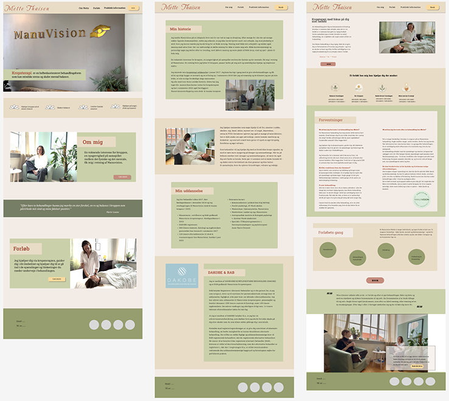

tema 5
grundlæggende indhold
dette tema giver dig en grundlæggende indførsel i indholdsproduktion, herunder præproduktion, selve produktionen, samt postproduktion. vi benytter smartphone kameraer til fotografering. dette er væsentligt for at kunne lave mindre indholdsproduktioner selv, samt for bedre at kunne kommunikere professionelt med kunder. du vil blive introduceret til grundlæggende faglige begreber inden for indholdsproduktion, og du benytter derudover de færdigheder, du har fået i de foregående temaer til at redesigne en virksomheds hjemmeside.

proces
tema 5 bestod af to dele, som begge foregik i grupper - for første gang på semesteret. i den første del blev vi introduceret til premiere pro, og skulle, for at arbejde med programmet og øve os i indholdsproduktion, filme en video i grupper. vi brainstormede mundtligt i gruppen, og besluttede at lave en video om “en dag som kaffekop”.
herefter lavede vi et storyboard, som forberedelse til vores optagelser, hvorefter vi filmede vores klip. efterfølgende fik vi en introduktion til premiere pro i undervisningen, og lavede nogle øvelser i programmet. hernæst redigerede vi vores video sammen i premiere pro, og jeg fik en oplevelse af at lære programmet godt at kende, samt få en forståelse for nogle af de mange værktøjer det indeholder. afslutningsvis præsenterede vi vores video for hinanden i undervisningen.

anden del af temaet bestod i at vi skulle redesigne en eksisterende hjemmeside, hvortil vi valgte mette thaisen kropsterapi. vi startede med at udarbejde en gruppekontrakt og dernæst blev vi introduceret til scrum som et strukturerings og samarbejdsværkstøj, og udarbejdede et scrumboard i gruppen. vi fulgte løbende op på scrumboardet, og jeg oplevede det som et godt struktureringsværktøj, som også bidrog til at vi nemmere kunnne holde overblik. vi tog udgangspunkt i designprocessen fra tema 3, og arbejdede sammen i figma.
i research fasen lavede vi en deskresearch, samt en analyse af de eksisterende site. vi testede siden, for bedre at forstå brugeroplevelsen. dernæst gik vi videre til at arbejde med vores målgruppe, userstories, moodboard, styletile, wireframes og dernæst den digitale prototype. undervejs besøgte vi klinikken, for at lære mere om stedet og mette, samt producere indhold til siden. vi testede herefter på vores prototype, rettede til, lavede layoutdiagrammer, samt begyndte at kode vores site. vi startede med at lave vores globale html, som header og footer, samt css hvor vi stylede vores globale indhodlskomponenter, blandt andet vha. css custom properties. afslutningsvis testede vi på sitet, og lavede en præsentation som vi fremlagde i undervisningen.

løsning
vores løsning blev en hjemmeside holdt i en grøn og beige farvepalette, en forside med en stemningsvideo samt to undersider. jeg villle gerne have haft tid til en design itteration 2, da vores løsning endte med at afspejle et lidt for sart udtryk og ikke den styrke og ro som vi havde oplevet da vi var ude og besøge klinikken.

læring og reflektioner
jeg fandt tema 5 meget lærerigt, og fik især meget ud af at arbejde sammen og få øjnene op for andre måder at gøre tingene på - både ift. design og kodning. det var en god oplevelse at have sparingspartnere, og at kunne bruge temaet som en opsamling på mange af de ting vi havde været igennem i semesteret. det gik især op for mig hvor vigtigt det kan være at lave en design itteration 2, hvilket er en læring jeg tager med videre, og vil prøve at implementere i den opgave jeg arbejder på nu.
pil